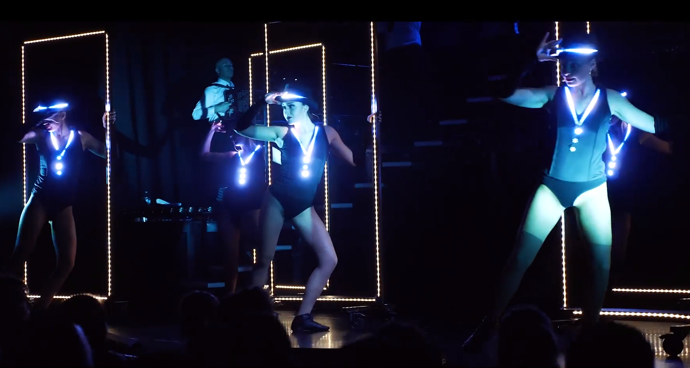
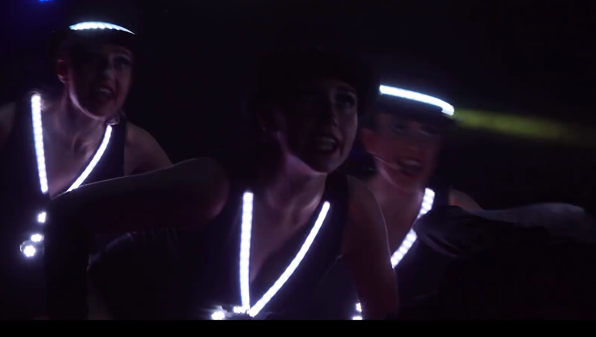

|
1999 Nantes 44000 |
baccalauréat Général ES Lycée Gaspard Monge |
|
en cours de carrière d'éclairagiste (2006-2019) |
en formation professionnelle
|
|
Actuellement : mai 2021 - novembre 2021 |
formation développeur web / web mobil
compétences visées
|
anciens employeurs réguliers
- le Carré, scène nationnale de Chateau-Gontier, 53
- le 6par4, SMAC de Laval, 53
- Changé Culture, saison culturelle de Changé, 53
- LBS Production, prestataire à Louverné, 53
- Scengo, prestataire à Segré, 49
Régisseur Lumière en spectacle vivant
design lumière / cconception / pupitrage / réalisation
exemple de réalisation de dossier techniques
redimensionnez depuis le coin bas-droit
simulation en 3D
photos de light design
quelques réalisations MAO, 2006-2010
Après avoir quitté un poste fixe en 2006 je suis partie vivre dans une nouvelle région. Loin de mmon réseau professionnel j'ai eu du temps libre pour pratiqué la musique assistée par ordinateur. Il reste des preuves de mes méfaits sur Soundcloud
réalisations en langage web
Developpement et maintient de momdule pour FoundryVTT, plateforme de jeux de rôle en ligne.
C'est une application NodeJS créant un serveur sur lequel des joueurs se rejoignent.Son API est documentée sur cette page
technos impliquées
- HTML, CSS, JS
- templating=>Handlebars
- 2D=>PIXIjs
- outils : Gulp, Scss, Git
exemples
réalisation arduino
production de costumes lumineux pour Cabaret Le Live
réception de paquets Artnet (protocole d'éclairage par réseau),
sur des cartes embarquées dans les costumes des danseuses.
traduction en signal SPI pour piloter des leds Néopixels
 